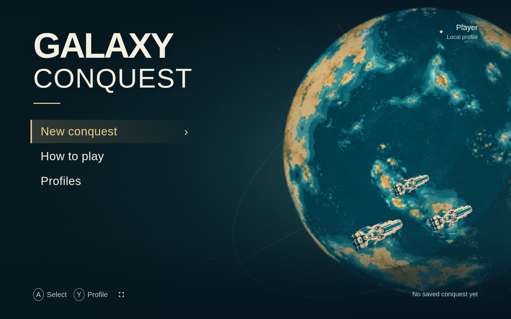
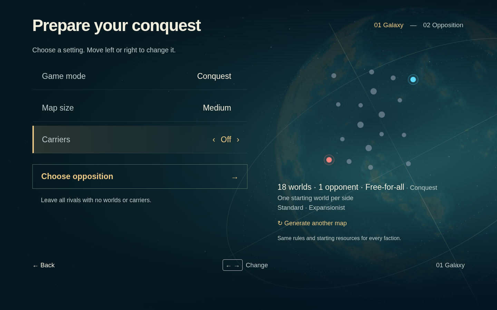
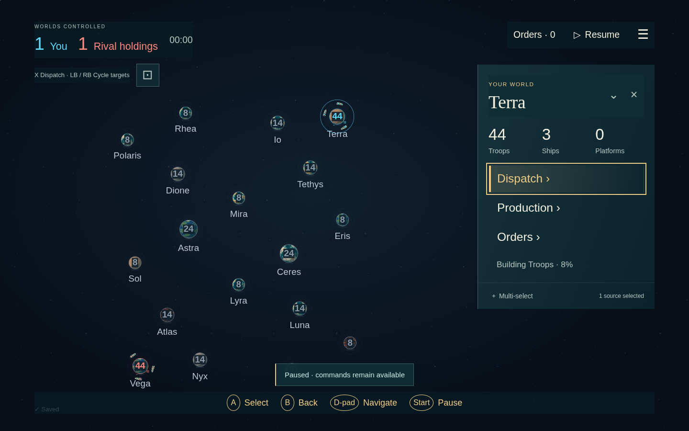
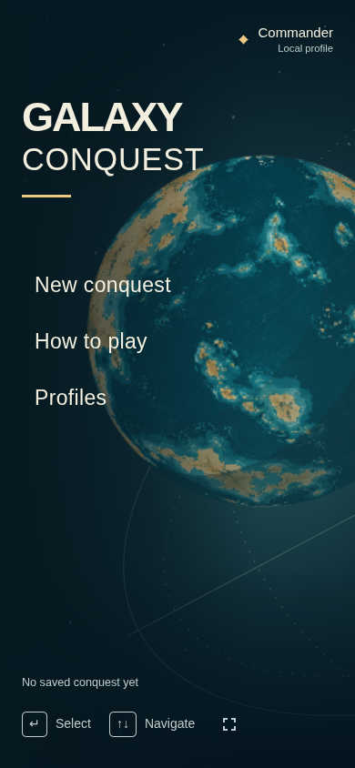
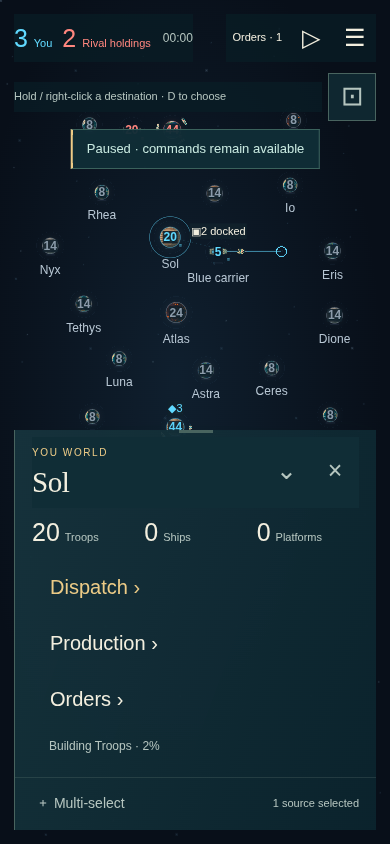
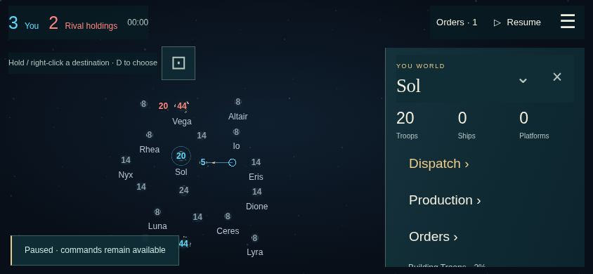

Command Horizon, implemented in the game. These are screenshots from the running build.






Passed: 207 tests, lint, TypeScript, production build, simulated controller gameplay, and mouse/keyboard/touch browser journeys.
Unmeasured: physical-controller comfort, TV-distance readability, and physical-device touch comfort.